the whole world
in a single look.
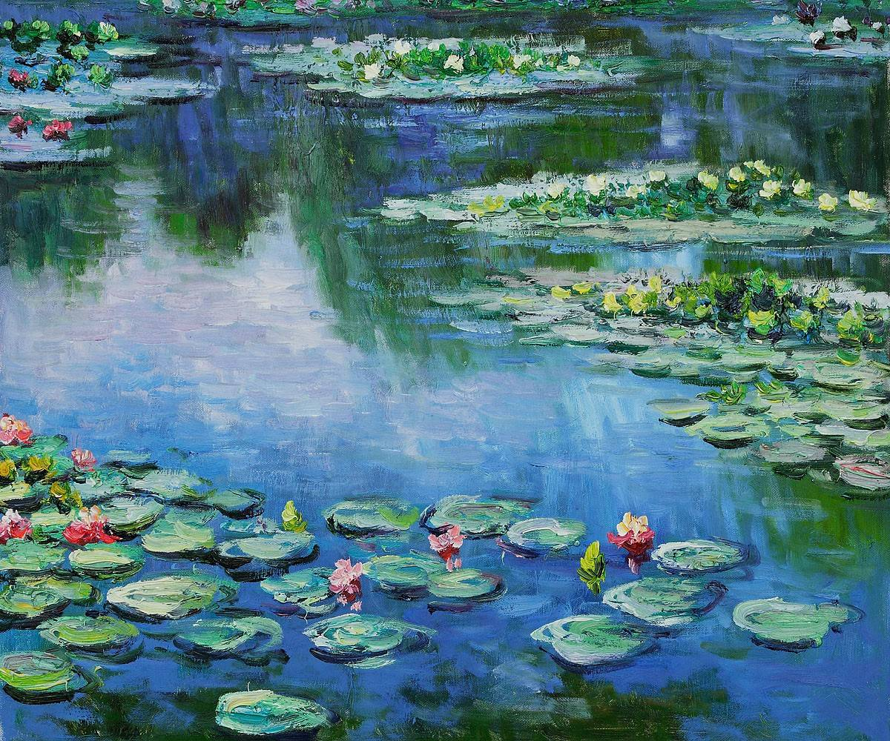
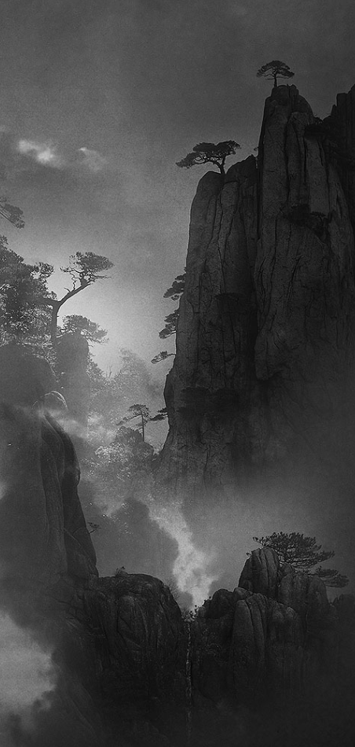
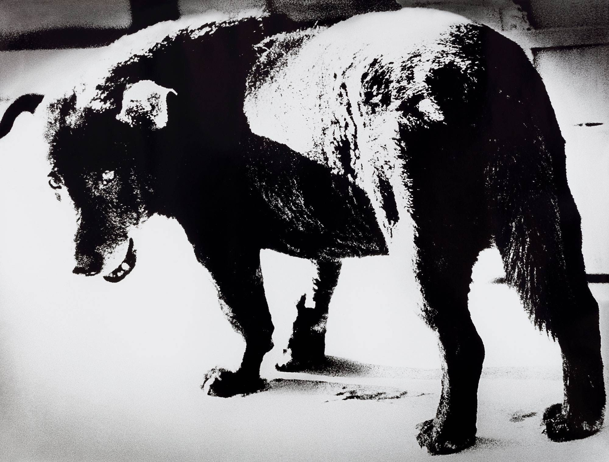
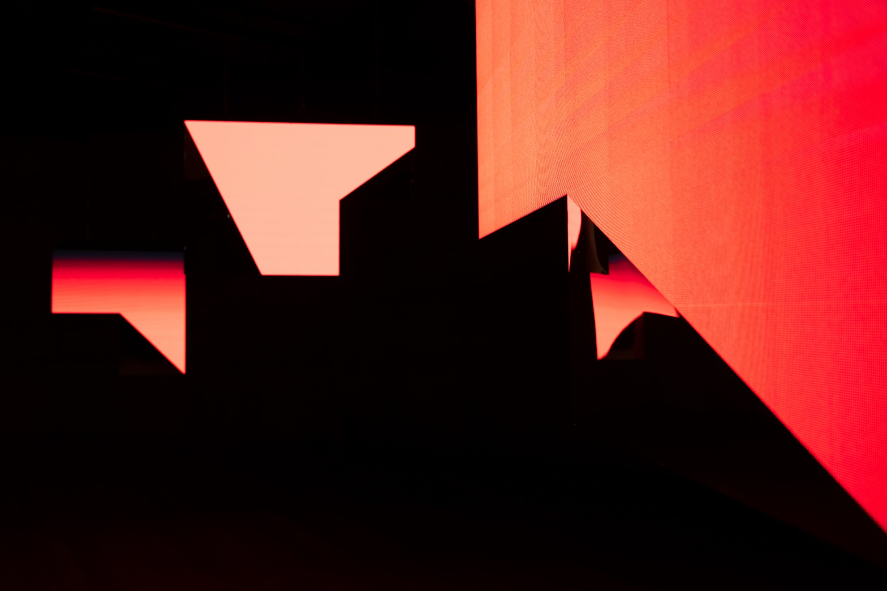
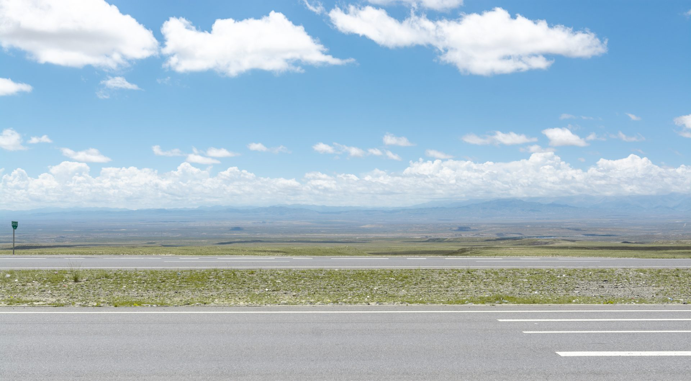
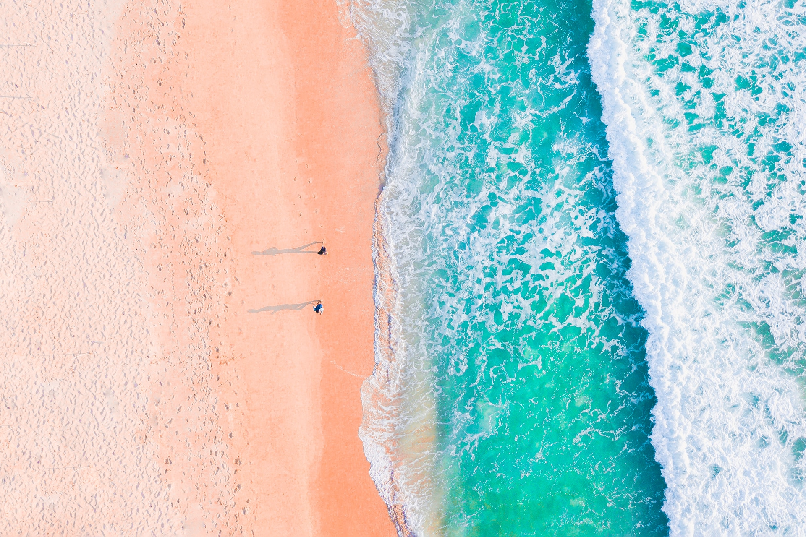
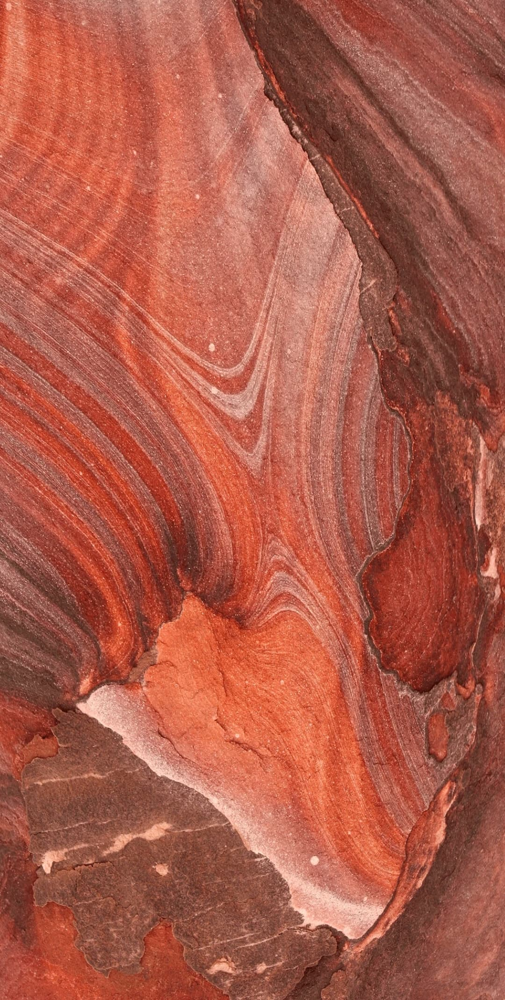
大自然是崇高的，涟漪变幻着不同形状的火焰。高峰下临深谷，幽潭傍依天柱，高风峻骨，溢出光与彩，夕阳染红了天边，踽踽而来，是古道边望向的焰川赤岩。朱砂轻拢慢涌，铺排相接，变化多姿，妙趣横生。夕阳山外山，那是大自然的匠心艺术。
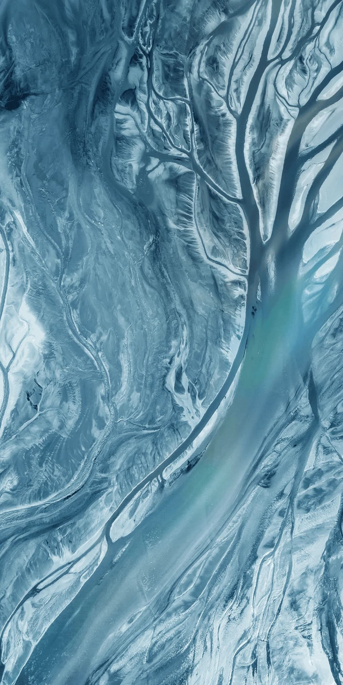
峡谷小溪，潺潺流淌，俯瞰山下，溯流而上，溪流淌在大地的怀里，山间云雾缭绕，宛如仙境一般。延伸在山丘中的纹理脉络，展示着独特的魅力，大自然的鬼斧神工，是悠远深沉的意境，河流奔腾，是大自然艺术，在谱写着生命的赞歌。
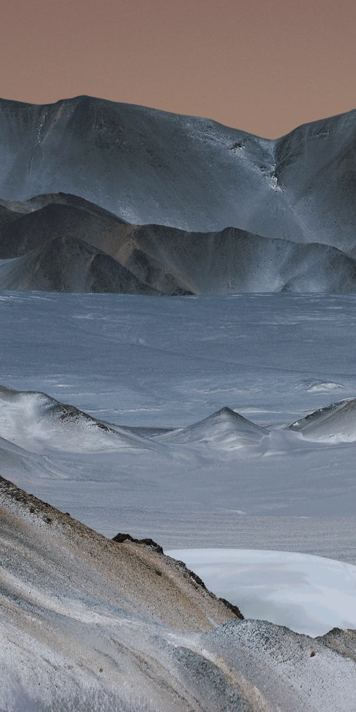
清水江，如诗如画，礁石江滩，太阳渐渐隐落山头，若隐若现，置身其间，万籁俱寂，幽幽江水，在习习晚风中,泛起粼粼波光。江。上的薄雾和洒在江面上的阳光，铸就了那水墨泼就的画卷，绘就着令人陶醉的自然艺术风光。
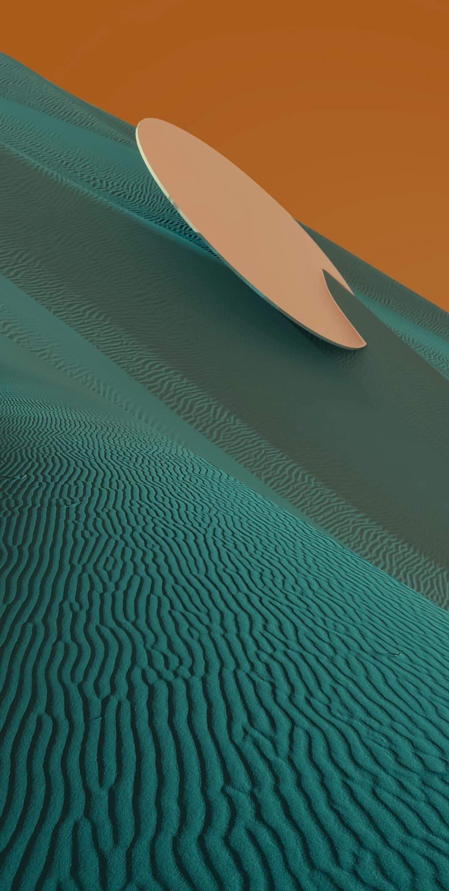
峰峦起伏，在飘渺的云雾里，画卷中，鸣笙起秋风，鲜艳的色彩让人眼前一亮。苍茫云海，阳光透过云层，轻轻地酒在山岭之间，远山近漠，行人无不感受到生命的朝气与活力，自然艺术的美景，令人如痴如醉。
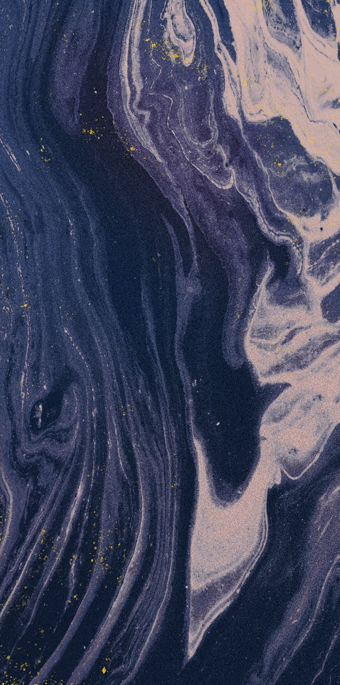
静谧的月夜，风平浪静，微波不兴，偶尔晚风一吹，如晕染清波的美丽涟漪，荡起心的柔情，划着浅痕荡漾在江面。沧海穹天和群岛，一道道靓丽的风景线，如梦如烟。海湾的河，荡漾着斑驳的剪影，恍若一幅色彩斑斓的油画，幻妙的演绎令人陶醉。